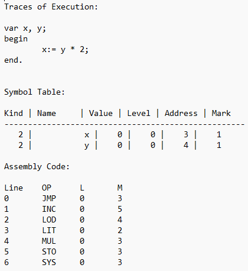

Part 3: Recursive Descent Parser and Code Generator for Tiny PL/0 Compiler
Description
This project was a four step project that focused on building a stack-based virtual machine (PM/0 P-Machine), creating a lexical analyzer, implementing a Recursive Descent Parser, and generating code for tiny PL/0 while using specific grammar.